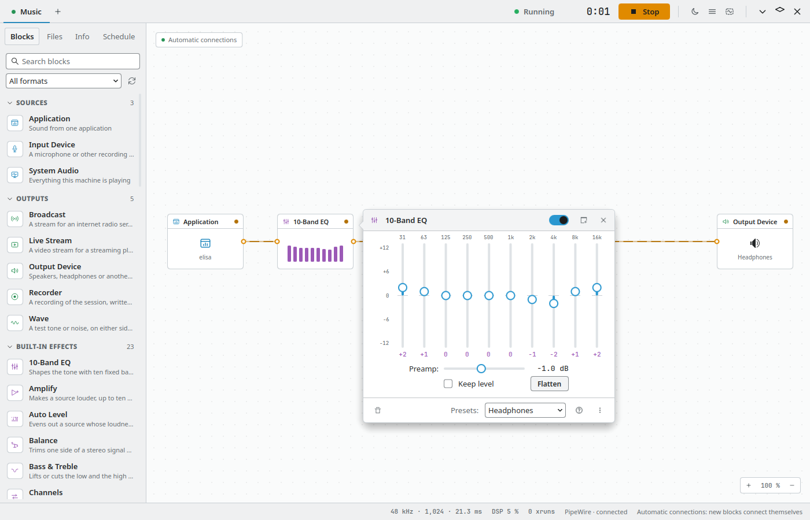
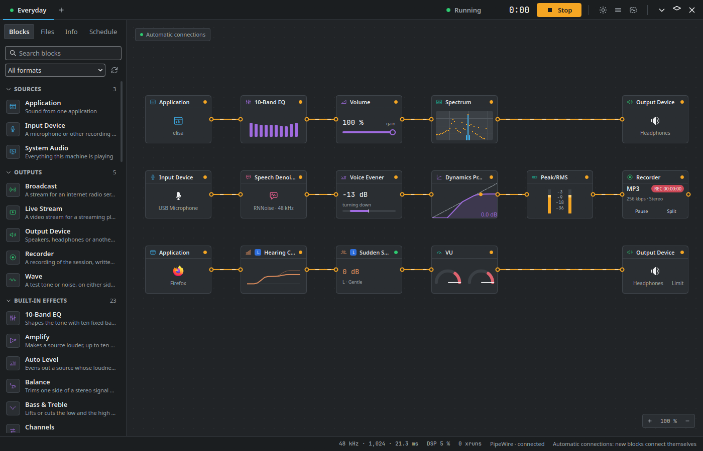
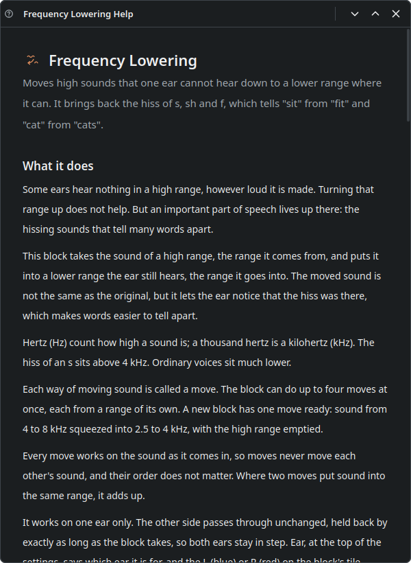
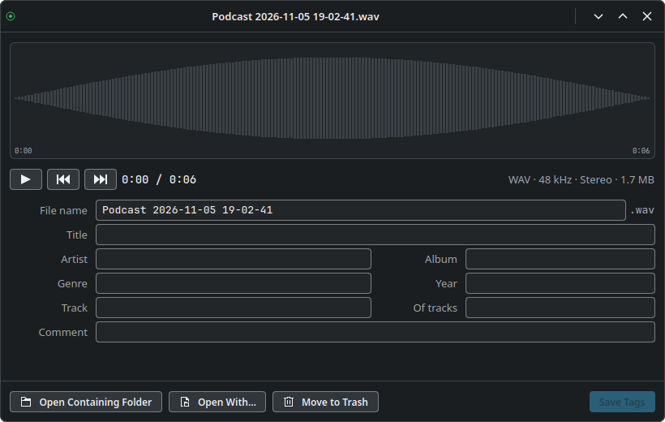
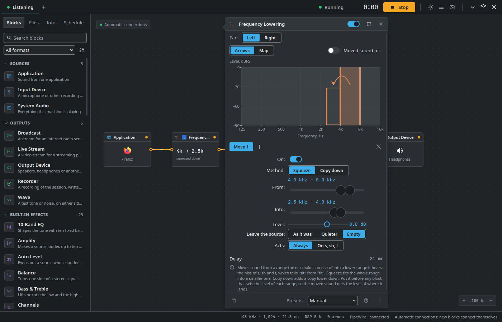

Everything Reverblabr does
Reverblabr works in sessions. A session takes sound from sources, runs it through effects and meters, and sends it to outputs. You build it on a canvas from blocks, and you can change anything while it plays. This page lists all of it; the documentation has the details.
The blocks
The library sorts the blocks into seven groups, in the colours the window gives them. Click one to add it after the selected block; with automatic connections on, it is wired in as well. Every block has its settings, presets of its own and a help window. A few blocks are built only where the library they need is there: they are marked, and the download page says which package has them.

Sources
3- Application
- Sound from one application
- Input Device
- A microphone or other recording input
- System Audio
- Everything this machine is playing
Outputs
5- Broadcast
- A stream for an internet radio server
- Live Stream
- A video stream for a streaming platform
- Output Device
- Speakers, headphones or another output
- Recorder
- A recording of the session, written to a file
- Wave
- A test tone or noise, on either side or both
Built-in Effects
23- 10-Band EQ
- Shapes the tone with ten fixed bands
- Amplify
- Makes a source louder, up to ten times, and nothing else
- Auto Level
- Evens out a source whose loudness keeps changing
- Balance
- Trims one side of a stereo signal against the other
- Bass & Treble
- Lifts or cuts the low and the high end
- Channels
- Swaps, mutes or folds the left and right channels
- Dynamics Processor
- Holds loud sound back and lifts quiet sound
- Echo
- Repeats the sound, each repeat quieter than the last
- High Pass Filter
- Rolls off everything below a chosen frequency
- Limiter
- Holds the signal below a ceiling it cannot cross
- Low Pass Filter
- Rolls off everything above a chosen frequency
- Model Beta Not in the Flatpak
- Runs the sound through a trained model from a folder (below)
- Mono Enhancer
- Widens a mono recording without breaking it
- Multiband Compressor
- Steadies the low, middle and high ranges apart
- Night Level
- Keeps speech where it is and brings louder and quieter sounds towards it
- Pan
- Places a sound between the left and the right
- Pitch Shift
- Moves the pitch up or down, at the same speed
- Reverb
- Puts the sound in a room, from a booth to a hall
- Simple Compressor
- Steadies the level from one choice, not six controls
- Voice Compressor
- Holds a voice steady with three controls: compression, gate, ceiling
- Voice Evener
- Keeps voices even: quiet talkers come up and loud ones come down
- Voice Forward
- Moves voices forward against music and effects
- Volume
- Turns a source up or down to match the others
Meters
7- Peak/RMS
- A level meter for any point in a lane
- Sound Side
- Shows which side of the mix is louder right now
- Spectrum
- Shows how much of each frequency there is at this point in a lane
- Speech Now
- Shows a word and a dot while someone is speaking on this lane
- Voice Gauge
- Shows the level of a voice on this lane against marks you place
- VU
- A pair of needles following the average level
- Waveform
- Draws the sound at this point in a lane as it goes by
Advanced
11- Declick
- Takes out clicks, pops and crackle
- Dehum
- Takes out the steady hum of the mains supply
- Denoise
- Takes out a steady noise once it has been learned
- Ducking
- Turns a background source down under a voice
- FIR Filter
- Applies a correction measured from a file
- Input Switch
- Passes one of two inputs and fades between them
- Mixer
- Combines up to five sources, each with its own strip
- Parametric EQ
- Shapes the tone with bands you place yourself
- Speech Denoise Not in the Ubuntu package
- Clears noise from speech with nothing to set up
- Sync
- Delays a lane to line it up with another
- Time Shift
- Pauses and rewinds sound that is still arriving
Hearing
7- Frequency Lowering
- Moves high sounds down to where one ear hears them
- Frequency Raising Experimental in parts
- Moves low sounds up to where one ear hears them
- Hearing Compensation 16
- Lifts quiet sound for one ear, in sixteen bands
- Hearing Compensation 64
- Lifts quiet sound for one ear, in sixty-four bands set with points
- Join L/R
- Puts a left and a right lane back into one stereo pair
- One Ear Mix
- A mono mix that puts both sides into one ear
- Sudden Sounds
- Softens sudden sharp sounds such as clicks and knocks
Plugins
5- CLAP Not in the Debian and Ubuntu packages
- A CLAP plugin installed on this machine
- LADSPA
- A LADSPA plugin installed on this machine
- LV2
- An LV2 plugin installed on this machine
- Test Plugin
- A plugin built in, for checking that plugins run
- VST3 Not in the Ubuntu package
- A VST3 plugin installed on this machine
Speech Now, Voice Gauge and Night Level listen for a voice with a small voice model where Speech Denoise is built, and otherwise by its level and rhythm, which can be wrong more often.
The window

- Sessions in tabs. Several sessions, one tab each, saved as you work. A session opens stopped: it never starts making sound just because Reverblabr was opened. All Sessions lists every session you have, with what it is doing, to run or stop several at once, sorted and with the columns you choose.
- The canvas. Click a block in the library to add it after the selected one. With automatic connections it is wired in too; with manual ones, hold Ctrl and drag from an output to an input. Several wires into one input are mixed there. Ctrl+9 fits the whole session in the window.
- Undo for everything. Every change, moving a block or a wire included, can be undone, and the Edit menu says which change it would take back.
- Find a block by typing. Ctrl+F goes to the library's search, the best match comes first, and Enter adds it.
- Presets. Every block keeps presets of its own, and sixteen come with 63 factory presets between them. Reset to Default Settings puts a block back the way a new one starts.
- Help beside the settings. The ? on a block's settings opens its help in a window you can keep open. F1 opens the handbook.
- Settings outside the window. A block's settings can be pulled off the main window and dragged anywhere on the desktop, across screens, and Reverblabr puts them back there the next time it opens the session. On Wayland this needs
layer-shell-qt, which comes with Plasma. - Meters over other programs. Speech Now and Voice Gauge can show their reading in a small window that stays above other programs, and Sound Side a thin strip on the screen. Meters can show in the system tray too.
- The Info tab (Ctrl+3) holds a session's title and notes, its connections, its sample rate and latency (Default, Low or Very low), Auto Run, the audio system it runs on, and Diagnostics, with Copy Diagnostics for a bug report.
- Dark, light or your own. Reverblabr Dark and Reverblabr Light, switched in the top row, or Follow System for your Plasma colours, fonts and title bar.

Recording
- The Recorder block writes what reaches it to a file and passes the sound on unchanged, so a lane can go on to your speakers. Several Recorders can record the same sound, each to its own file.
- Formats: WAV (RF64 past 4 GB), AIFF, FLAC, MP3, Opus and Ogg Vorbis, and AAC and Apple Lossless in M4A where your system's FFmpeg can write them. Quality comes as Voice, Standard and High-quality MP3, High-quality AAC, Lossless and Uncompressed, or set by hand.
- Split and pause. Split ends the file and starts the next with no gap; Pause leaves the paused time out.
- Limits: a new file every so many minutes, hours or megabytes, a stop after a while, or something done about silence: leave it out, start a new file after it, or stop.
- Names and tags. File names from the session, the date, the time and a counter, with your own words; tags such as title, artist and album written into each file.
- A crash doesn't cost you the recording. The file plays as it is up to the last few seconds, and Reverblabr restores the rest the next time it starts.
- The Files tab (Ctrl+2) lists what a session recorded, newest first, with each file's outline, length, format and size. Play it, start from any point, open its folder, open it in another program or move it to the trash.
- The Recording Inspector renames a file and fills in its tags.

Before you record anyone but yourself, read Privacy: in many places it is against the law to record a call without the agreement of everyone in it.
Virtual devices
A virtual device is a sound card with no hardware behind it. Other programs list it like any other sound card, and a session can record from it or play into it. That puts a session between your programs and your real sound card, in either direction.
Process the sound of your programs
Make a virtual output and send your browser, your music player or every program to it. A session takes it in with an Input Device block, runs it through an equaliser, a compressor or the Hearing blocks, and plays the result on your real speakers or headphones.
Process your microphone for other programs
Take your real microphone into a session, clean it up, and end the lane at a virtual microphone. Pick that in your call or recording program. Set the session to run at login, and the processed microphone is simply there.
- Outputs and inputs, stereo or mono, as many as you need. Rename them, switch them off or delete them in the Virtual Devices window.
- They belong to your desktop, not to Reverblabr: they stay until you delete them, whether Reverblabr is running or not, and come back after a restart.
- For every user of the computer too, after an administrator's password. Not in the Flatpak or the AppImage.
- No feedback howl. A connection that would feed a session's sound back into its own input is refused, and Reverblabr says so.

Plugins
- LV2, CLAP, VST3 and LADSPA plugins installed on your computer, beside the built-in blocks. Which formats a package can host is on the download page.
- The library lists every plugin it found by name, under its format, and its search looks through them all. Look for plugins again finds the ones you install later.
- Plugin Window opens an LV2, CLAP or VST3 plugin's own window, and it and the panel follow each other. A LADSPA plugin gets a panel built from its settings. The plugin's own presets are listed, and the ones you save go where other programs that use the plugin find them.
- Each plugin runs in a process of its own. If one crashes or hangs, its block is bypassed, the sound goes on without it, and Restart brings it back with its settings. A plugin that crashes while Reverblabr looks for plugins is left out, and the search finishes.
VST is a registered trademark of Steinberg Media Technologies GmbH.
Hearing
The blocks in the Hearing group shape sound one ear at a time. They lift quiet sound band by band, hold each band under a limit you set, and move sound from one range to another. Each ear has settings of its own, and they can start from an audiogram. They were made with someone who has partly lost his hearing, for everyday listening.

- Hearing Compensation 16 gives one ear more of what it hears faintly: in each of sixteen bands, a gain for soft, average and loud sound and a ceiling nothing goes above. Fit from Audiogram sets every band in one step. Hearing Compensation 64 lifts quiet sound in sixty-four bands, set with points.
- Frequency Lowering moves sound from a high range the ear doesn't hear into a lower one it does, so the hiss of s, sh and f comes back. Frequency Raising works the other way round, and is experimental in parts.
- Sudden Sounds softens sudden sharp sounds such as clicks and knocks, and leaves a sound that stays loud alone.
- One Ear Mix puts both sides into one ear, and Join L/R brings a left and a right lane back together, lined up in time, so each ear can have blocks of its own.
- Limits built in: a ceiling for the output and the most gain a band may get. Raising a limit takes one more step and the sound rises to it slowly. Where a block that can add gain comes after the last limit, the Output Device adds a limit of its own and says why.
- Not a medical device. Reverblabr measures nothing about anybody's health and doesn't replace an audiologist or a hearing aid. Its limits work on the numbers inside the computer: how loud that is at your ear depends on your volume and your headphones. A safety notice comes up before the first Hearing block is added.
Hearing in the documentation explains them, safety first.
In the background
- The background engine,
reverblabrd, runs your sessions. The first call to it starts it, sessions keep playing when the window closes or crashes, and it leaves by itself a minute after nothing runs or uses it. Started again after a crash, it opens the sessions it had open, stopped. - Auto Run. Set a session to Run when I log in, and the engine starts it when you log in, without opening the window. Once per login by default, so a session you stopped stays stopped, or every time the engine starts.
- Timers. The Schedule tab (Ctrl+4) starts a session once on a date, every day, Monday to Friday or on the days you choose, at a time and for as long as you set. When it is done it can ask the applications the session captures to quit. Timers are systemd user timers, so Reverblabr doesn't have to be open; they don't wake a computer that is asleep.
Auto Run and timers need an installed Reverblabr, from a package or an installed build. The Flatpak and the AppImage can't have them.
On the desktop
- The tray icon lists every session with its level and Run or Stop, and the meters you choose. A middle click shows or hides the window. A red dot means something is being recorded, a warning sign that something went wrong.
- The panel widget, Reverblabr Sessions, puts your sessions in a Plasma panel, with the window closed: a dot for running and one for recording, and a list with levels and Run or Stop.
- KRunner. Type rb and part of a session's name to run or stop it, or rb rec to see which sessions are recording. It works with the window closed.
- Global shortcuts run or stop each session, show the window, play A or B of an Input Switch, control Time Shift, start a new recording file, show Sound Side's strip, and have your screen reader say who is speaking or how loud a voice is. No keys are set until you choose them in System Settings.
- Notifications when a recording finishes, a device disconnects, an application stops playing or plays again, a plugin stops, the disk under a recording is nearly full, or a connection that would feed a session back into itself is refused.
- The launcher offers New Session and All Sessions on Reverblabr's entry, and only one Reverblabr runs at a time: starting it again brings its window forward.
The panel widget and KRunner need an installed Reverblabr as well; the Flatpak and the AppImage have neither.
Scripting
reverblabr-ctl runs and changes sessions from a terminal, a script or cron: list, status, start, stop, split, switch, set and timers list. It answers in JSON with --json, its exit codes are documented, and it comes with a manual page and completion for bash and zsh.
reverblabr-ctl start "Evening radio"
reverblabr-ctl set "Evening radio" Voice gain 0.5
reverblabr-ctl split "Evening radio"
reverblabr-ctl status --jsonThe D-Bus API, io.github.reverblabr.Engine1 on the session bus, does everything the window does: the window uses nothing else. Nothing released in it is taken away or changed, only added to, and the same holds for the exit codes and the JSON of reverblabr-ctl. See reverblabr-ctl and the D-Bus API.
Radio and video streams
- Broadcast sends a lane to an internet radio server, Icecast or SHOUTcast, as MP3, Opus, Ogg Vorbis or AAC, over TLS to an Icecast server that offers it. The title listeners see comes from a text file or from a media player, and the block reconnects by itself when the server goes away.
- Live Stream sends a lane to a video streaming service over RTMP or RTMPS, with a picture made for it: a title, a logo, what is playing, and a waveform, spectrum or level meter that moves with the sound. 1024 × 576 at 15 frames a second, 1280 × 720 at 30 or 1920 × 1080 at 30, in H.264 from the graphics card (VA-API or NVENC), x264 or OpenH264, with AAC sound. It needs an H.264 encoder that works; on Fedora that is
openh264or the full FFmpeg from RPM Fusion. - A Broadcast password and a stream key are kept in your desktop's password store, KWallet on Plasma, never in the session file.
The Model block Beta
The Model block runs the sound through a trained model from a folder you choose, in a process of its own, so a model that is slow or crashes can't stop the session: a streaming DeepFilterNet export to clean up a voice, an RVC-style voice, or any ONNX model a small reverblabr-model.json describes.
- Reverblabr includes no models and never downloads one.
- Sound leaves the block only after the model has processed it. Whenever the model isn't there, it is silent rather than passing the sound around it.
- It is Beta: still being debugged. Fedora's ONNX Runtime runs it on the processor only, and a voice adds about 390 ms of delay. It needs ONNX Runtime, so the Flatpak doesn't have it.
Without a mouse
- A session can be built, wired and run from the keyboard: Ctrl+F to add a block, Tab from block to block, C to wire one to the next, D to remove a wire, Enter for its settings and Space to run.
- The canvas works with a screen reader, which says each block's name, whether it is on and what it is wired to. Show as List lays a session out lane by lane, which is often easier to follow.
- Meters are read out as progress bars named after their block, and a clipping meter is announced once.
- In the Reverblabr appearances, text and every mark that means something meet the contrast of WCAG 2.1 AA. Follow System takes your own colour scheme, high contrast included.
Privacy
Reverblabr doesn't use the network on its own account: no usage statistics and no update checks. Only Broadcast and Live Stream send anything, to the server you name. Copy Diagnostics leaves out your home folder, user name and computer name. A running session shows up by name in PipeWire's own tools, such as wpctl status, so you can see what is listening. Privacy says more, about recording other people too.
Languages
Reverblabr speaks fifteen languages: English, German, Spanish, French, Italian, Brazilian Portuguese, Russian, Polish, Japanese, Korean, Simplified and Traditional Chinese, Ukrainian, Dutch and Turkish. It follows your desktop's language, or the one you choose in its Settings window. The window, its notifications, the panel widget and reverblabr-ctl are all translated. Every word goes through KDE's translation system, so a new language is a matter of translating it (Translations).